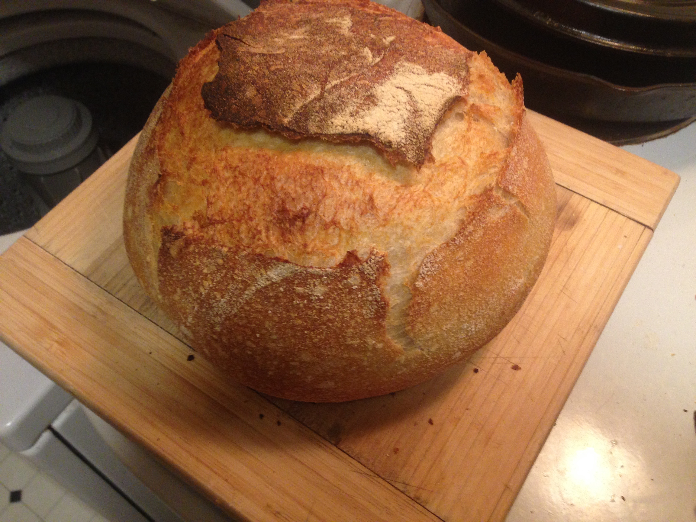

Hi! I'm currently a student at Ada Developer's Academy, Cohort[2]. Ada is a year long intensive programming school, preparing graduates to start careers as full-stack web developers. Someday, I will need a job. This site is to showcase my work as a budding developer.
When I'm not immersed in coding, I enjoy watching nerdy TV/movies, training Krav Maga, and baking bomb ass bread:
